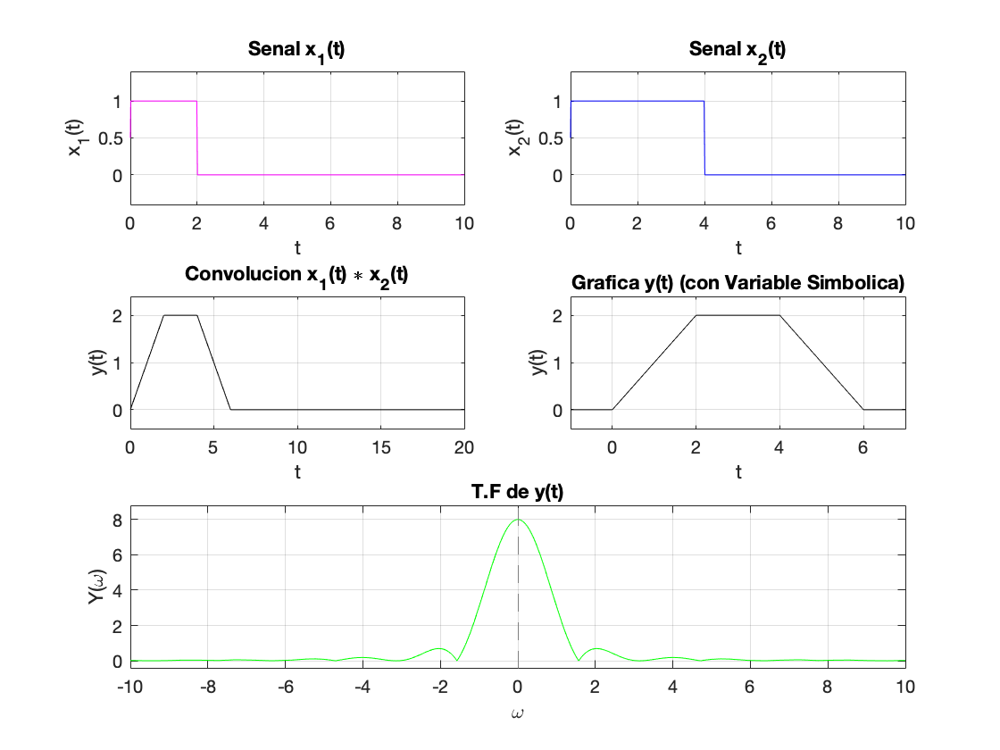
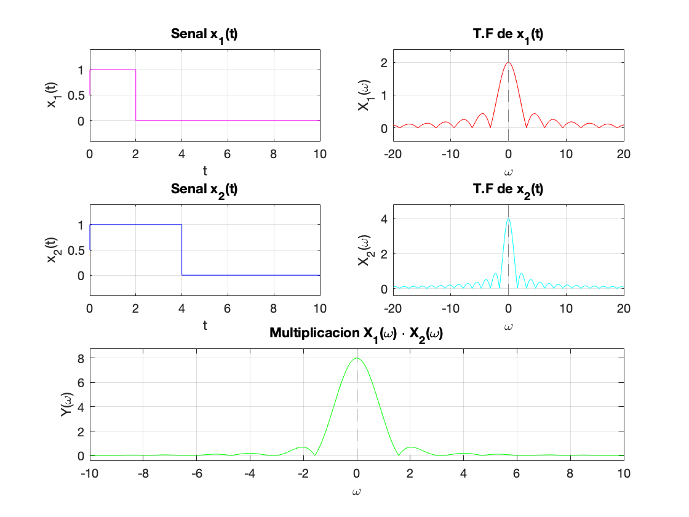

function [ ] = ejercicio1( )
clear all
close all
t=0:0.01:10;
x1=heaviside(t)-heaviside(t-2);
x2=heaviside(t)-heaviside(t-4);
Y=conv(x1,x2)*0.01;
t2=0:0.01:(length(x2)+length(x1)-2)*0.01;
figure
subplot(3,2,1)
plot(t,x1,'m');
grid
xlabel('t')
ylabel('x_1(t)')
title('Senal x_1(t)')
ylim([-0.4 , 1.4])
subplot(3,2,2)
plot(t,x2,'b');
grid
xlabel('t')
ylabel('x_2(t)')
title('Senal x_2(t)')
ylim([-0.4 , 1.4])
subplot(3,2,3)
plot(t2,Y,'k');
grid
xlabel('t')
ylabel('y(t)')
title('Convolucion x_1(t) \ast x_2(t)')
ylim([-0.4 , 2.4])
syms p
z=rampas(p)-rampas(p-2)-rampas(p-4)+rampas(p-6)
Z = fourier(z,p)
subplot(3,2,4)
fplot(z,[-1 7],'k')
grid
xlabel('t')
ylabel('y(t)')
title('Grafica y(t) (con Variable Simbolica)')
ylim([-0.4 , 2.4])
subplot(3,2,[5,6])
fplot(abs(Z),[-10 10],'g')
grid
xlabel('\omega')
ylabel('Y(\omega)')
title('T.F de y(t)')
ylim([-0.4 , 8.8])
clear all
syms t w;
x1 = heaviside(t)-heaviside(t-2);
X1 = fourier(x1,w)
x2 = heaviside(t)-heaviside(t-4);
X2 = fourier(x2,w)
Y = X1*X2
figure
subplot(3,2,1)
fplot(x1,[0 10],'m')
grid
xlabel('t')
ylabel('x_1(t)')
title('Senal x_1(t)')
ylim([-0.4 , 1.4])
subplot(3,2,2)
fplot(abs(X1),[-20 20],'r')
grid
xlabel('\omega')
ylabel('X_1(\omega)')
title('T.F de x_1(t)')
ylim([-0.4 , 2.4])
subplot(3,2,3)
fplot(x2,[0 10],'b')
grid
xlabel('t')
ylabel('x_2(t)')
title('Senal x_2(t)')
ylim([-0.4 , 1.4])
subplot(3,2,4)
fplot(abs(X2),[-20 20],'c')
grid
xlabel('\omega')
ylabel('X_2(\omega)')
title('T.F de x_2(t)')
ylim([-0.4 , 4.8])
subplot(3,2,[5,6])
fplot(abs(Y),[-10 10],'g')
grid
xlabel('\omega')
ylabel('Y(\omega)')
title('Multiplicacion X_1(\omega) \cdot X_2(\omega)')
ylim([-0.4 , 8.8])
end
z =
heaviside(p - 6)*(p - 6) - heaviside(p - 4)*(p - 4) - heaviside(p - 2)*(p - 2) + p*heaviside(p)
Z =
pi*dirac(1, p)*1i - exp(-p*2i)*(pi*dirac(1, p) + 1i/p^2)*1i - exp(-p*4i)*(pi*dirac(1, p) + 1i/p^2)*1i + exp(-p*6i)*(pi*dirac(1, p) + 1i/p^2)*1i - 1/p^2
X1 =
(cos(2*w)*1i + sin(2*w))/w - 1i/w
X2 =
(cos(4*w)*1i + sin(4*w))/w - 1i/w
Y =
((cos(2*w)*1i + sin(2*w))/w - 1i/w)*((cos(4*w)*1i + sin(4*w))/w - 1i/w)
 